Images
Environments
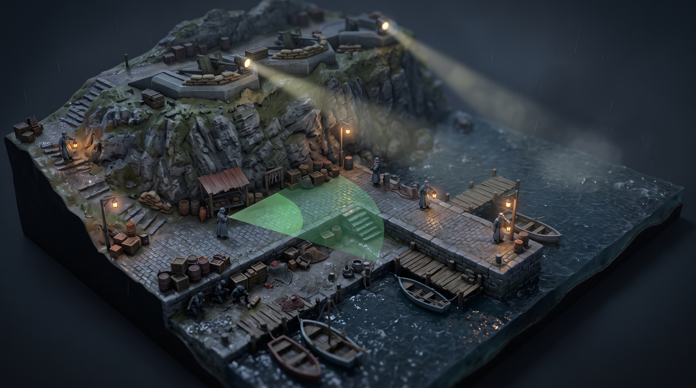
Prompt
Art direction for "Operation Shadow", an original 1940s-inspired tactical stealth game. Stylized-realistic miniature diorama look, as if a detailed hand-crafted tabletop model were photographed with a subtle tilt-shift lens. High-angle three-quarter isometric camera (about 50 degrees pitch). Physically based materials with hand-painted detail, soft global illumination, muted palette of slate blue, olive drab, weathered stone and rust red, accented by warm lamp light. Crisp, readable silhouettes. Game concept art quality. Fictional world: no real-world flags, insignia or symbols, no text. Scene: Varrow Harbor at night in light rain and fog. A small fishing village with stone quays, wooden piers and moored fishing boats; a fortified gun battery with concrete emplacements on the cliff above; two searchlights sweeping the dark water; enemy sentries in long slate-grey greatcoats patrolling with lanterns. One sentry's field of view is shown as a faint translucent two-tone green cone projected on the wet cobblestones (brighter near zone, darker far zone), like a tactical game overlay. Three tiny allied commandos crouch in shadow beside crates at the water's edge.
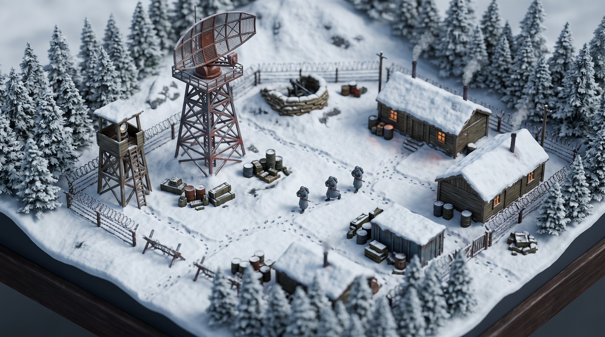
Prompt
Art direction for "Operation Shadow", an original 1940s-inspired tactical stealth game. Stylized-realistic miniature diorama look, as if a detailed hand-crafted tabletop model were photographed with a subtle tilt-shift lens. High-angle three-quarter isometric camera (about 50 degrees pitch). Physically based materials with hand-painted detail, soft global illumination, muted palette of slate blue, olive drab, weathered stone and rust red, accented by warm lamp light. Crisp, readable silhouettes. Game concept art quality. Fictional world: no real-world flags, insignia or symbols, no text. Scene: a radar outpost on a snowy mountain saddle under overcast daylight. Timber barracks with snow-laden roofs, a steel lattice tower carrying a large radar dish, barbed-wire fences, a sandbagged machine-gun nest, a wooden watchtower with a searchlight, pine forest at the edges, and fresh footprint trails crossing the snow. A patrol of three enemy soldiers in grey greatcoats walks a perimeter path.
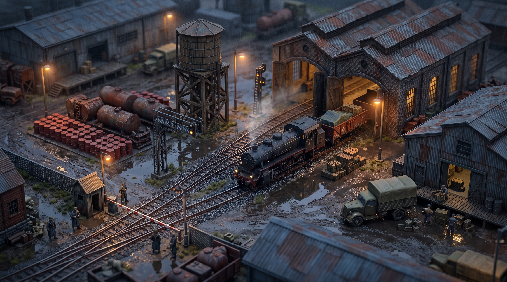
Prompt
Art direction for "Operation Shadow", an original 1940s-inspired tactical stealth game. Stylized-realistic miniature diorama look, as if a detailed hand-crafted tabletop model were photographed with a subtle tilt-shift lens. High-angle three-quarter isometric camera (about 50 degrees pitch). Physically based materials with hand-painted detail, soft global illumination, muted palette of slate blue, olive drab, weathered stone and rust red, accented by warm lamp light. Crisp, readable silhouettes. Game concept art quality. Fictional world: no real-world flags, insignia or symbols, no text. Scene: a rail depot at dusk in drizzle. A black steam locomotive with freight wagons, a brick engine shed, a timber water tower, a fuel depot with rows of red barrels, warehouses, signal gantries, puddles reflecting warm sodium lamps, steam drifting through the yard. Sentries stand at a checkpoint barrier while a supply truck is unloaded.
Key art & UI
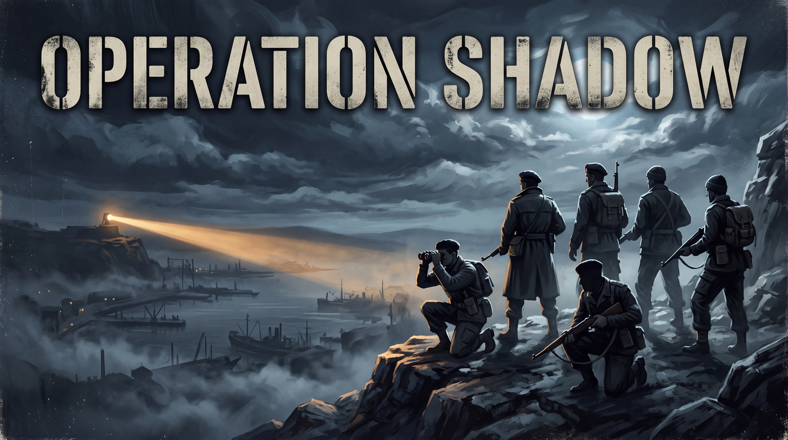
Prompt
Painterly cinematic key art for "Operation Shadow", an original 1940s-inspired tactical stealth game. Six silhouetted commandos of Shadow Section stand on a rocky cliff above a fog-bound harbor at night, lit by moonlight and a distant sweeping searchlight, under a dramatic cloudy sky. Muted slate-blue palette with warm highlights. The game title "OPERATION SHADOW" appears in bold, weathered stencil lettering across the top. Fictional world: no real-world flags, insignia or symbols.
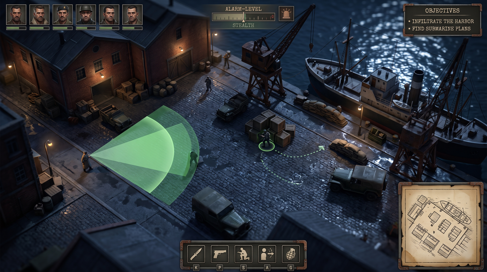
Prompt
Concept mockup of the in-game screen of "Operation Shadow", an original 1940s-inspired tactical stealth game. The harbor at night seen from the high isometric tactical camera, rendered as a stylized-realistic miniature diorama. A clean, restrained military field-equipment style HUD sits around the screen edges only: six small character portraits with thin health bars along the top-left, a compact objectives panel at the top-right, an alarm-level indicator at the top-center, an ability bar with simple icons at the bottom-center, and a parchment-style tactical minimap at the bottom-right. On the ground, a translucent two-tone green vision cone from one guard; one selected commando with a subtle ring marker and a dotted path-preview line. No real-world insignia.
Characters
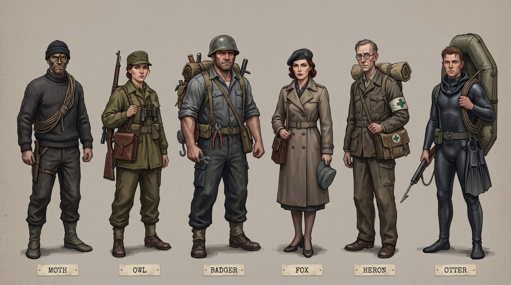
Prompt
Character concept lineup sheet for "Operation Shadow", an original 1940s-inspired stealth game, on a neutral warm-grey background. The six members of Shadow Section stand side by side, full body, front view, each with a distinct silhouette, with a small label plate under each figure reading MOTH, OWL, BADGER, FOX, HERON, OTTER: MOTH: lean man in his thirties, dark knit watch cap, charcoal wool sweater, climbing rope coiled over one shoulder, knife sheath, soft-soled boots, face streaked with dark camouflage cream. OWL: woman in her late twenties, olive field cap, olive smock with a leather map case, long scoped rifle slung across her back, binoculars on her chest. BADGER: broad-shouldered man in his forties, dented steel helmet, heavy canvas backpack bristling with tools, wire cutters on his belt, satchel charges, rolled-up sleeves. FOX: elegant woman in her thirties, belted trench coat over civilian clothes, dark beret, leather satchel, a folded grey enemy officer cap tucked under one arm. HERON: tall, thin man in his fifties, round wire spectacles, white armband with a green cross, worn medical satchel, rolled canvas stretcher on his back. OTTER: wiry man in his twenties, dark rubberized diving suit with the hood rolled down, swim fins clipped to his belt, short harpoon gun, coiled line, packed inflatable dinghy. Painted concept-art style, muted 1940s palette, consistent scale. No real-world insignia.
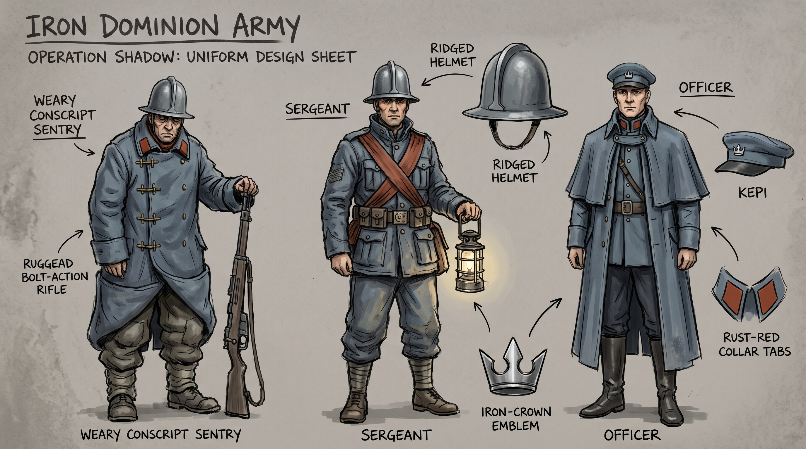
Prompt
Uniform design sheet for the fictional Iron Dominion army in "Operation Shadow": an invented army that is deliberately not based on any real nation's uniforms. Painted concept-art style on a neutral background, with a distinctive silhouette that cannot be mistaken for any historical army. Three full-body figures: - a weary conscript sentry in a double-breasted slate-blue greatcoat with rust-red collar tabs and brass toggle fastenings, wearing a tall rounded steel helmet with a raised central ridge running front to back and a narrow flat brim all around, carrying a bolt-action rifle; - a sergeant in a short slate-blue field jacket with a rust-red sash, the same ridged helmet, carrying a lantern; - an officer in a long slate-blue cape-coat over a high-collared tunic, wearing a soft flat-topped kepi with a short brim, with a small silver emblem of a stylized iron crown with three points. Add labelled close-up callouts of the iron-crown emblem, the rust-red collar tabs, the ridged helmet and the kepi. The iron crown is the only emblem anywhere on the sheet.
Squad portraits
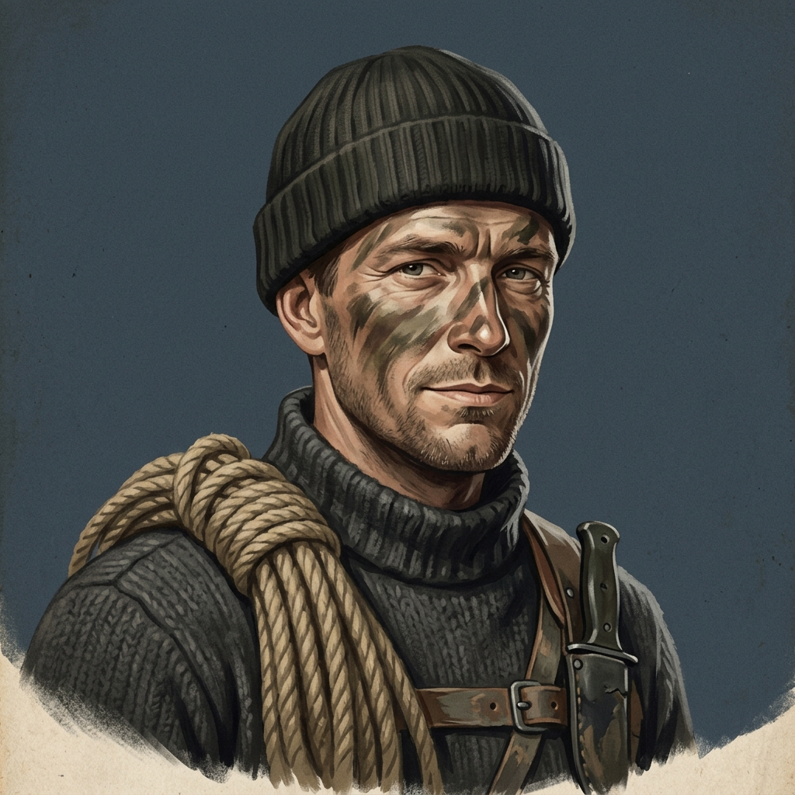
Prompt
HUD character portrait for "Operation Shadow", an original 1940s-inspired stealth game. Head and shoulders, three-quarter view, painted in a 1940s gouache illustration style with subtle film grain, muted palette, soft key light from the upper left, plain dark slate-blue background, consistent framing for a matching set of six portraits. No text, no frame, no real-world insignia. Subject: lean man in his thirties, dark knit watch cap, charcoal wool sweater, climbing rope coiled over one shoulder, knife sheath, soft-soled boots, face streaked with dark camouflage cream. Personality to convey: Former mountain guide. Soft-spoken, economical with words, bone-dry humor, never raises his voice.
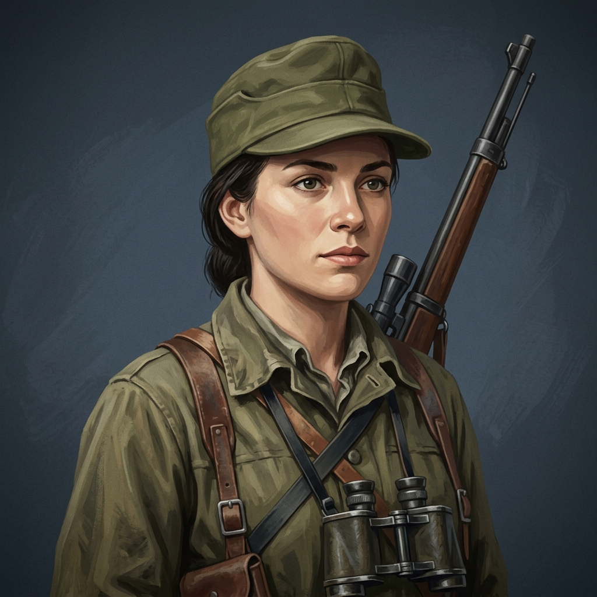
Prompt
HUD character portrait for "Operation Shadow", an original 1940s-inspired stealth game. Head and shoulders, three-quarter view, painted in a 1940s gouache illustration style with subtle film grain, muted palette, soft key light from the upper left, plain dark slate-blue background, consistent framing for a matching set of six portraits. No text, no frame, no real-world insignia. Subject: woman in her late twenties, olive field cap, olive smock with a leather map case, long scoped rifle slung across her back, binoculars on her chest. Personality to convey: Former cartographer. Precise, patient, clipped; reports numbers and bearings.
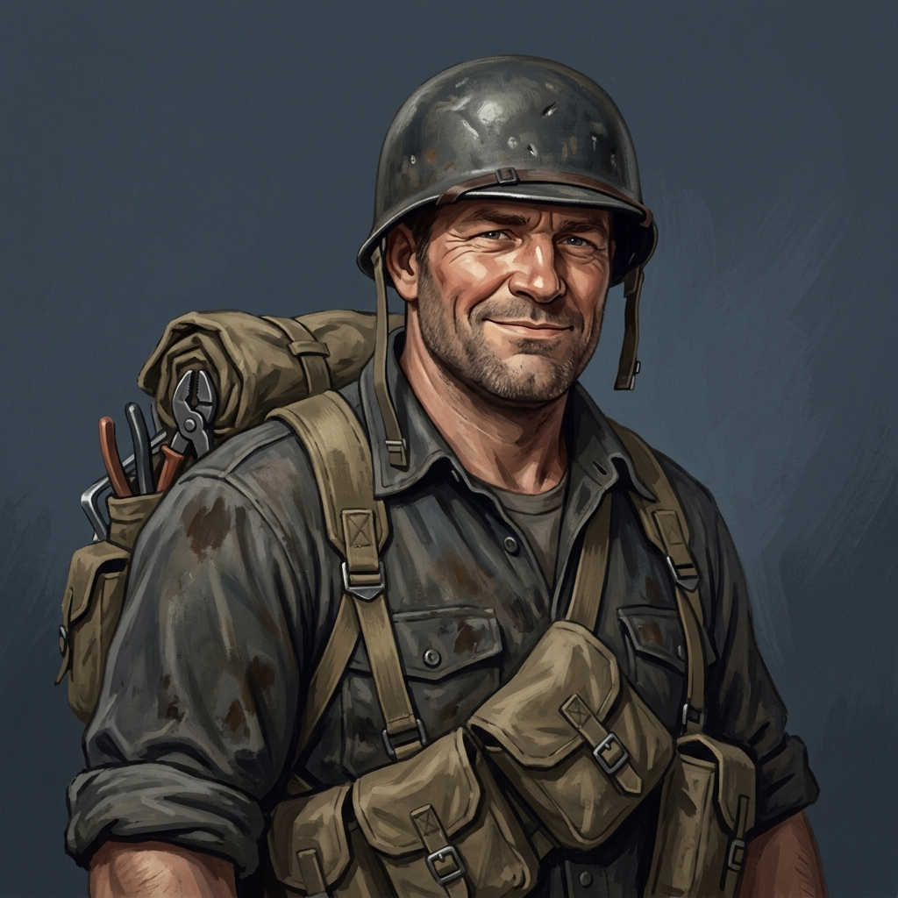
Prompt
HUD character portrait for "Operation Shadow", an original 1940s-inspired stealth game. Head and shoulders, three-quarter view, painted in a 1940s gouache illustration style with subtle film grain, muted palette, soft key light from the upper left, plain dark slate-blue background, consistent framing for a matching set of six portraits. No text, no frame, no real-world insignia. Subject: broad-shouldered man in his forties, dented steel helmet, heavy canvas backpack bristling with tools, wire cutters on his belt, satchel charges, rolled-up sleeves. Personality to convey: Ex-shipyard welder. Big-hearted, gruff and cheerful; talks affectionately to machines and charges.
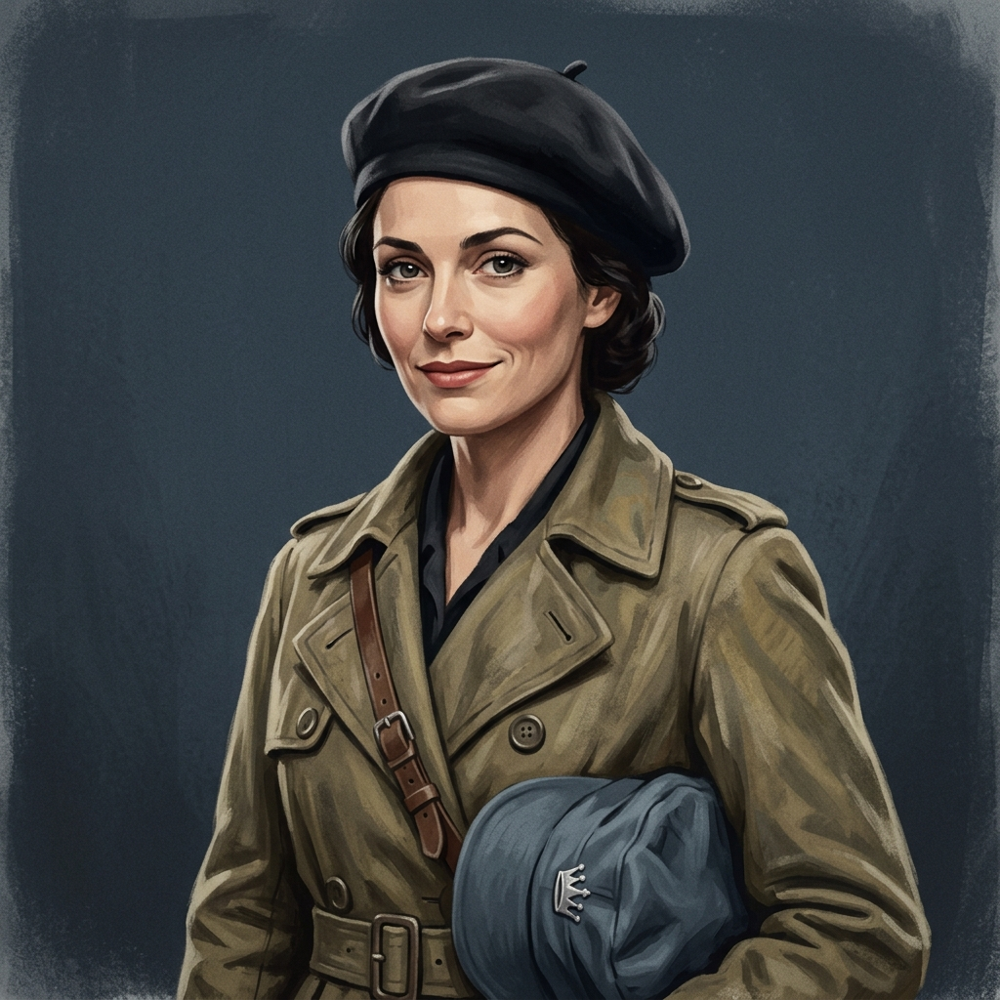
Prompt
HUD character portrait for "Operation Shadow", an original 1940s-inspired stealth game. Head and shoulders, three-quarter view, painted in a 1940s gouache illustration style with subtle film grain, muted palette, soft key light from the upper left, plain dark slate-blue background, consistent framing for a matching set of six portraits. No text, no frame, no real-world insignia. Subject: elegant woman in her thirties, belted trench coat over civilian clothes, dark beret, leather satchel, a soft slate-blue enemy officer's kepi tucked under one arm whose only badge is a small silver three-pointed crown. Personality to convey: Former stage actress. Theatrical, charming, quick-witted; relishes playing a role.
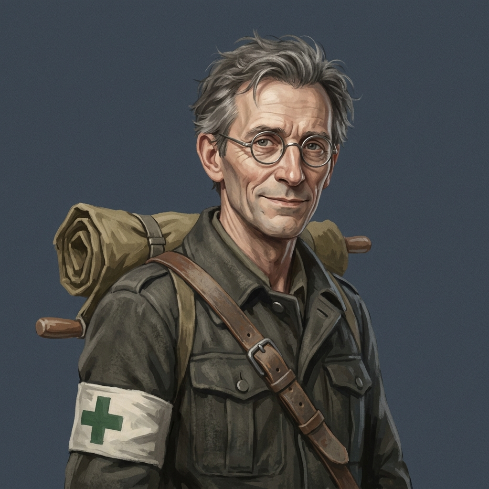
Prompt
HUD character portrait for "Operation Shadow", an original 1940s-inspired stealth game. Head and shoulders, three-quarter view, painted in a 1940s gouache illustration style with subtle film grain, muted palette, soft key light from the upper left, plain dark slate-blue background, consistent framing for a matching set of six portraits. No text, no frame, no real-world insignia. Subject: tall, thin man in his fifties, round wire spectacles, white armband with a green cross, worn medical satchel, rolled canvas stretcher on his back. Personality to convey: Former country doctor. Calm, compassionate, wry gallows humor, steady under fire.
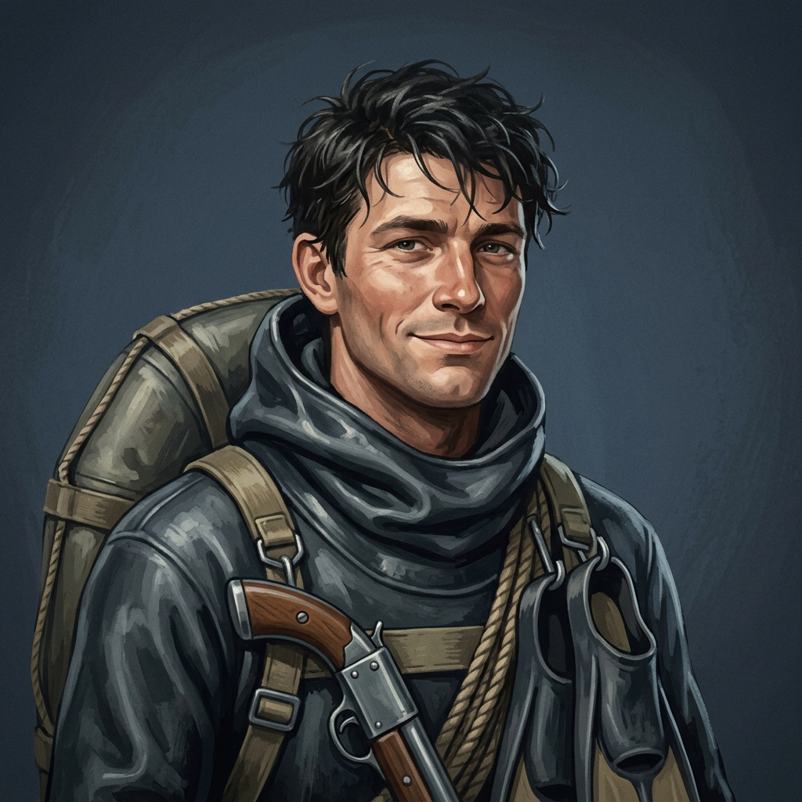
Prompt
HUD character portrait for "Operation Shadow", an original 1940s-inspired stealth game. Head and shoulders, three-quarter view, painted in a 1940s gouache illustration style with subtle film grain, muted palette, soft key light from the upper left, plain dark slate-blue background, consistent framing for a matching set of six portraits. No text, no frame, no real-world insignia. Subject: wiry man in his twenties, dark rubberized diving suit with the hood rolled down, swim fins clipped to his belt, short harpoon gun, coiled line, packed inflatable dinghy. Personality to convey: Fisherman's son. Laid-back, cocky, nautical slang, loves cold water.
Briefing
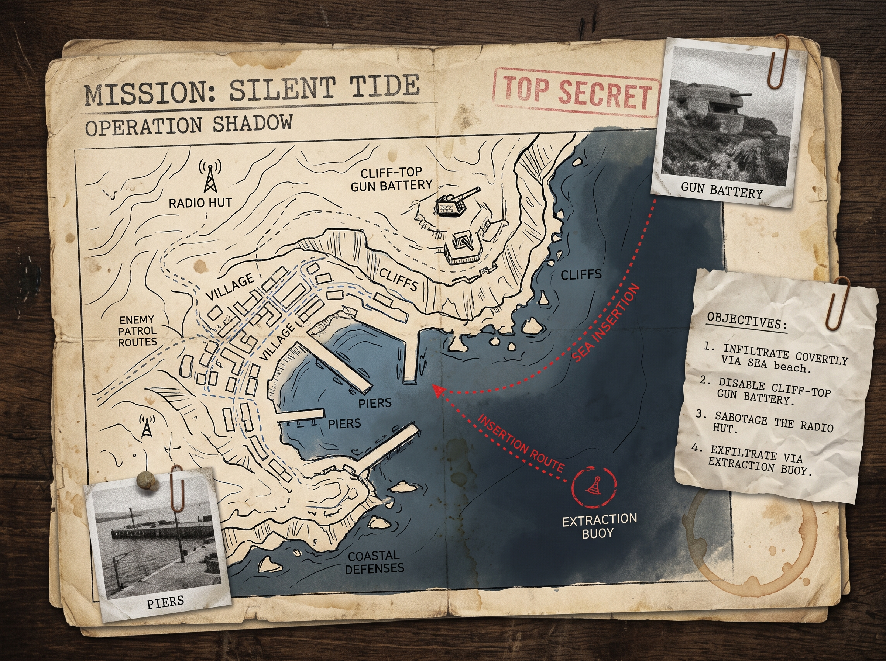
Prompt
In-world mission briefing dossier for "Operation Silent Tide" in the original game "Operation Shadow". A hand-drawn top-down tactical map of a fictional fishing harbor on aged paper: coastline, piers, village streets, a cliff-top gun battery, a radio hut, enemy patrol routes as dashed lines, a red insertion route arriving from the sea, and an extraction buoy marked with a circle. Pinned black-and-white reconnaissance photographs, a short typed objective list, a paperclip and a faint coffee stain. 1940s field-intelligence aesthetic. No real-world insignia.
Soundtrack
Main theme (menu)
Prompt
Original main menu theme for a 1940s-inspired tactical stealth game. D minor, 92 BPM. A solo muted trumpet states a heroic but melancholy melody over low strings and soft snare-drum rolls; it builds with French horns and timpani to a noble climax, then fades to a lone piano echo of the theme. Classic 1940s cinematic orchestral score with a warm vintage recording character. About two minutes. Instrumental only, no vocals, no choir, no lyrics.
Structure notes returned by the model
[[A0]] [[B1]] [[C2]] [[D3]] [[E4]]
Stealth exploration (loopable)
Prompt
Stealth exploration music for a 1940s-inspired tactical stealth game. D minor, 84 BPM. Sparse and tense: pizzicato basses, ticking rim clicks, low sustained string clusters, distant muted horn calls and occasional celesta motifs. Restrained dynamics so dialogue stays clear; no big climaxes; it ends quietly so it can loop. About two minutes. Instrumental only, no vocals, no choir, no lyrics.
Structure notes returned by the model
[[A0]] [[B1]] [[C2]] [[D3]] [[B4]] [[C5]] [[E6]]
Alarm / combat
Prompt
Alarm and combat music for a 1940s-inspired tactical stealth game. D minor, 168 BPM. An urgent, driving snare and timpani ostinato, aggressive staccato strings, brass stabs and rising horn figures; the feeling of being hunted. Relentless energy with brief breathing points. About two minutes. Instrumental only, no vocals, no choir, no lyrics.
Structure notes returned by the model
[[A0]] [[B1]] [[C2]] [[D3]] [[B4]] [[E5]]
Briefing underscore (30 s clip)
Prompt
Mission briefing underscore for a 1940s-inspired tactical stealth game. D minor, 70 BPM. Subdued and focused: solo piano, soft sustained strings, a faint radio-room atmosphere and a distant military snare. Instrumental only, no vocals, no choir, no lyrics.
Structure notes returned by the model
<instrumental>
Mission success sting (30 s clip)
Prompt
Mission success music for a 1940s-inspired tactical stealth game. D major, 80 BPM. Bittersweet relief: warm strings and a hopeful solo trumpet resolving a heroic theme, with gentle timpani. Instrumental only, no vocals, no choir, no lyrics.
Structure notes returned by the model
<instrumental>
Dialogue
Cast and voices
| LANTERN | Colonel Ruth Ashdown | HQ handler (radio) | Gacrux | Seasoned intelligence officer. Measured, authoritative, dry wit, quietly protective of her team. |
| MOTH | Sgt. Elias Varga | Infiltrator | Enceladus | Former mountain guide. Soft-spoken, economical with words, bone-dry humor, never raises his voice. Silent takedowns, climbing, restraints, noise lures. |
| OWL | Lt. Hanna Brekke | Recon / Marksman | Erinome | Former cartographer. Precise, patient, clipped; reports numbers and bearings. Binoculars, tagging enemies, suppressed rifle with very few rounds, tranquilizer darts. |
| BADGER | Cpl. Desmond 'Dez' Okafor | Combat Engineer | Algenib | Ex-shipyard welder. Big-hearted, gruff and cheerful; talks affectionately to machines and charges. Wire cutters, lockpicks, demolition charges, sabotage. |
| FOX | Celeste Marchand | Deception Specialist | Despina | Former stage actress. Theatrical, charming, quick-witted; relishes playing a role. Disguises, distracting guards with conversation, sedative syringe, forged papers. |
| HERON | Dr. Ivo Lindqvist | Field Medic | Schedar | Former country doctor. Calm, compassionate, wry gallows humor, steady under fire. Revives and treats the wounded, chloroform, smoke canisters. |
| OTTER | PO Kai Rennick | Marine Operator | Zubenelgenubi | Fisherman's son. Laid-back, cocky, nautical slang, loves cold water. Swimming and diving, inflatable boat, harpoon gun. |
| GUARD_A | Iron Dominion sentry (veteran) | Enemy | Charon | Weary older sentry who has seen too many cold nights. |
| GUARD_B | Iron Dominion sentry (conscript) | Enemy | Fenrir | Nervous young conscript, jumpy at every sound. |
Operation Silent Tide Briefing
- LANTERNMeasured, commanding over low-frequency radio crackle.Shadow Section, Varrow Harbor is cloaked in sea fog and rain. The Dominion garrison is hunkered down, which gives us our window.
- LANTERNClear, deliberate emphasis on the primary goal.Your objective is the fire-control radio inside the cliff-top battery. Disable that transmitter before dawn, or our approaching convoy will be torn to splinters in the strait.
- LANTERNCool and calculating.If opportunity permits, secure the harbor master's naval codebook from his desk. It will unlock Dominion coastal movements for months.
- LANTERNCrisp operational instruction.Otter will ferry you ashore beneath the north quay. Once the battery is silent, rendezvous at the north navigation buoy for extraction.
- LANTERNFirm, protective edge in her voice.Keep your heads down. If the battery raises the alarm, the barracks will pour reinforcements up that cliff road, and I expect all six of you back in one piece.
- LANTERNQuiet, dry confidence.Bring them silence, Shadow Section. HQ out.
Field Acknowledgements and Callouts
Night Watch at the Harbor Pier
- GUARD_BShivering, petulant grumble.My fingers are frozen stiff, and the galley served us turnip paste that tasted like canal mud.
- GUARD_AWeary, cynical sigh.Pull your greatcoat collar tight and stop whining, lad. The cold keeps you awake, and awake keeps you breathing.
- GUARD_BNervous, lowered voice.Did you hear the men from third watch? They swear phantoms are slipping through the fog, snatching sentries off the line.
- GUARD_ADismissive scoff.Campfire drivel meant to frighten green conscripts. There are no ghosts in Varrow, only salt mist and drafty piers.
- GUARD_BSudden, panicked whisper.Wait. By the freight crates past the slipway. I heard wood creak.
- GUARD_AIrritated, heavy-booted shuffle.It is harbor rats chewing tallow, like every other night. Stay by the lantern. I will check the crates.
- GUARD_BTrembling, squinting into the mist.Do you see anything? Do not go too far into the dark.
- GUARD_AShocked, sudden shout of pure alarm.Brandt is down in the ditch, bound and gagged! Alarm! Intruders on the north quay!
Urgent Intel: Captured Scout
- LANTERNUrgent, hushed tone breaking radio silence.Shadow Section, hold your breath. HQ just intercepted an encrypted dispatch from the Dominion harbor garrison.
- LANTERNGrim, concise delivery.They picked up a lone Coalition scout along the bluffs an hour ago. He is being held inside the harbor master's office for interrogation.
- LANTERNPragmatic, trusting her squad's judgment.The battery remains your priority, but bringing that scout home will save an entire network. I leave the call to you.
Whispers Behind the Nets
- FOXDisgusted, delicate theatrical whisper.I have played drafty provincial theaters, Dez, but crouching in rotten herring nets pushes my artistic limits.
- BADGERRough, muffled chuckle.Quit fidgeting, Celeste. A whiff of salted mackerel never killed anyone. Dominion machine gun fire certainly will.
- FOXDry theatrical critique.At least machine fire has dramatic presence. This smell will take root in my wool coat until next winter.
- BADGERLow, focused hiss.Hunker down. Sentry patrol is three paces away. Listen to those heavy hobnails crushing the gravel.
- FOXAmused, supercilious stage whisper.His posture is appalling. If I were staging this scene, he would be demoted to stagehand before the first act closed.
- BADGERGruff, suppressed smirk.Save the review for the morning papers, actress. Let him pass the net first.
Mission Accomplished: Debriefing
- LANTERNWarm satisfaction beneath a crisp exterior.Convoy Vanguard just cleared the strait without facing a single round from the cliffs. The guns remained blind and deaf.
- LANTERNProfessional commendation.Our decoders already have the harbor master's codebook in hand. The Dominion still has no idea how their cipher went missing.
- LANTERNSoft, maternal pride veiled in dry military wit.Otter brought you all out clean, without leaving so much as an oil slick behind. Outstanding work, the lot of you.
- LANTERNDry, forward-looking closer.Get some dry clothes and warm rations. Command is eyeing an alpine rail bridge in the high passes, and we move at dusk.